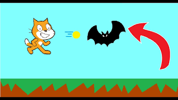
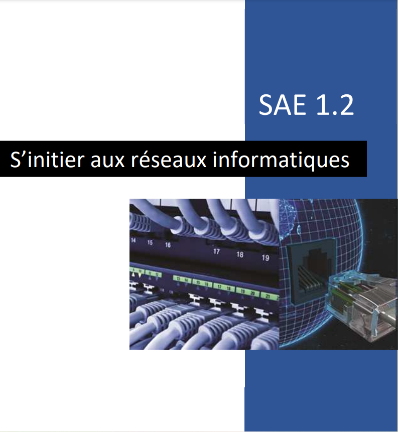

Présentation de la page
Nous retrouverons sur cette page la plupart des projets auxquels j'ai participé.
-
Petit jeux
En 3ème, nous avions comme objectif de coder un programme que nous devions présenter à la classe. J'ai donc décidé de créer un petit jeu vidéo simple. Pour cela, je me suis particulièrement intéressé à des tutoriels sur YouTube que j'ai ensuite modifiés pour créer mon jeu.
 -
SAé sur le réseau
Lors de la SAé réseau (Situation d'Apprentissage Évalué), nous devions comprendre la structure d'un réseau domestique pour mieux comprendre son fonctionnement. Nous avons utilisé différents outils réseau et réalisé un TP pour mettre en place un réseau de surveillance via une caméra de surveillance.
 -
SAé traitement des données
Dans cette SAé, nous devions extraire des données à l'aide d'un programme en Python et les afficher sur une page HTML. Pour mon groupe, nous devions extraire différentes informations à partir de trames GPS comme les points de départ et d'arrivée, l'altitude, les points cardinaux, la distance, la vitesse et le point le plus élevé. Nous avons utilisé des outils de gestion de projet tels que GIT pour la communication d'équipe et Umbrello pour représenter clairement le cahier des charges.